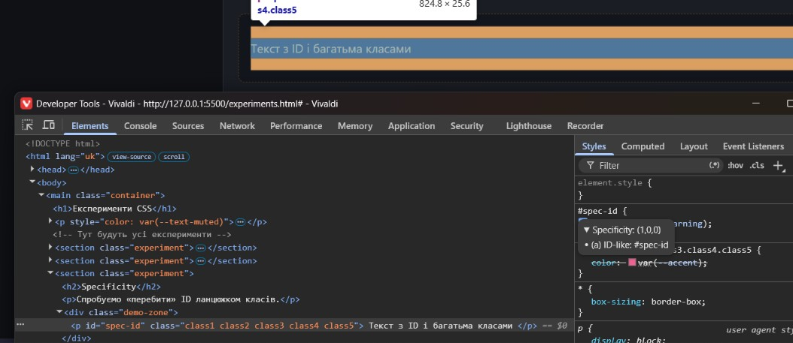
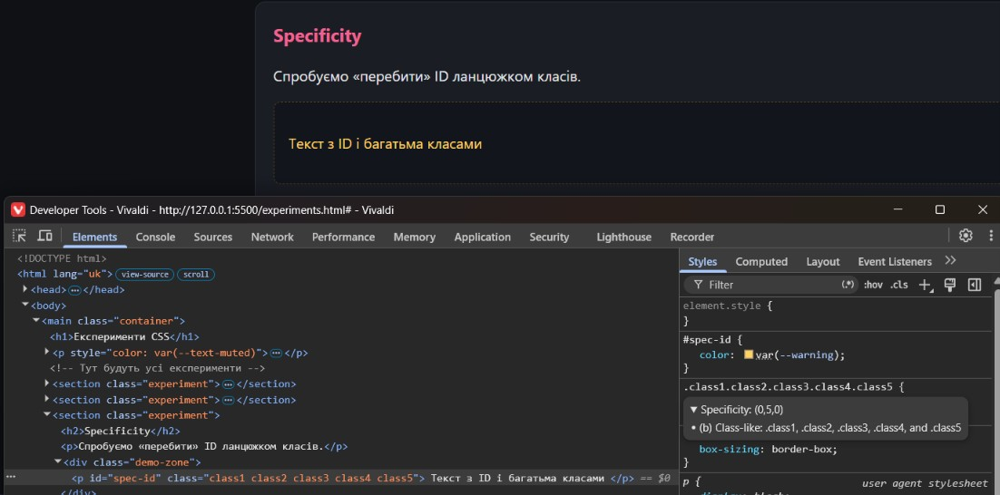

Лабораторна робота №2. Box Model, Cascade, Specificity, Inheritance, CSS Variables
Box Model
Два блоки з однаковою width: 200px і height: 100px, padding і
border. Один — content-box, другий — border-box.
content-box
border-box
Спостереження:
У content-box padding і border додаються до основного розміру, тому блок стає
більшим.
У border-box padding і border входять у задані 200px, тому фактичний розмір
залишається 200px.
Cascade
Один елемент отримує колір трьома правилами з однаковою специфічністю, але в різному
порядку.
Цей текст змінює колір залежно від порядку правил
Спостереження:
Перемагає правило, яке йде останнім у CSS. Якщо змінити порядок підключення або порядок
оголошення класів — переможе нове останнє правило.
Specificity
Спробуємо «перебити» ID ланцюжком класів.
Текст з ID і багатьма класами
Спостереження:

Styles – ID

Styles – class
Специфічність рахується як (ID, class, type):
p → (0,0,1)
.class1 → (0,1,0)
#spec-id → (1,0,0)
Навіть 5 класів (.class1.class2…) дають (0,5,0) — це менше, ніж один ID (1,0,0). Тому ID
завжди перемагає. Висновок: ID має найвищу специфічність серед звичайних селекторів. Краще
уникати ID у стилях.
Inheritance
На body задано font-family і color. Дивимось, що
успадковується.
Спостереження: font-family і color успадковуються в <p>.
<a> і <button> мають свої user-agent стилі, тому
колір не успадковується. Щоб змусити успадкувати — використовуємо
color: inherit. Висновок: Не всі властивості успадковуються.
CSS Variables (Custom Properties)
Змінні оголошені в :root. Усередині картки їх перевизначаємо.
Звичайна картка (використовує :root)
.dark-card (локальні змінні)
Спостереження:
Змінні в :root доступні всюди. Коли ми перевизначаємо їх всередині
.dark-card, область видимості стає локальною — тільки для цього елемента і
його нащадків. Висновок: Це ідеальний спосіб робити теми і стани компонентів без
дублювання коду.
Повторне використання стилів (утилітарні / компонентні класи)
Базовий клас .btn + модифікатори.
Спостереження:
Компонентний підхід .btn + модифікатори зменшує дублювання, робить CSS легшим
для підтримки і зменшує розмір файлу. Замість унікальних стилів для кожної кнопки ми
перевикористовуємо спільну базу.